烬行
JINXING弓箭手哥哥 × 失联的义体人弟弟
贯穿宇宙最深的羁绊——血脉相连的兄弟。从童年裹被子的温暖，到成年后星际流浪、生死未卜的漫长寻找。

猎人还没成为猎人的那个黄昏，
他在蕨丛里遇见铃兰精灵。
他正用花瓣包扎一株受伤的贯众，
指尖滴着清晨的露。
他把弓箭藏在背后，
他却说：我认得你。
在你出生前的某个清晨，
我就见过你拉开这张弓。
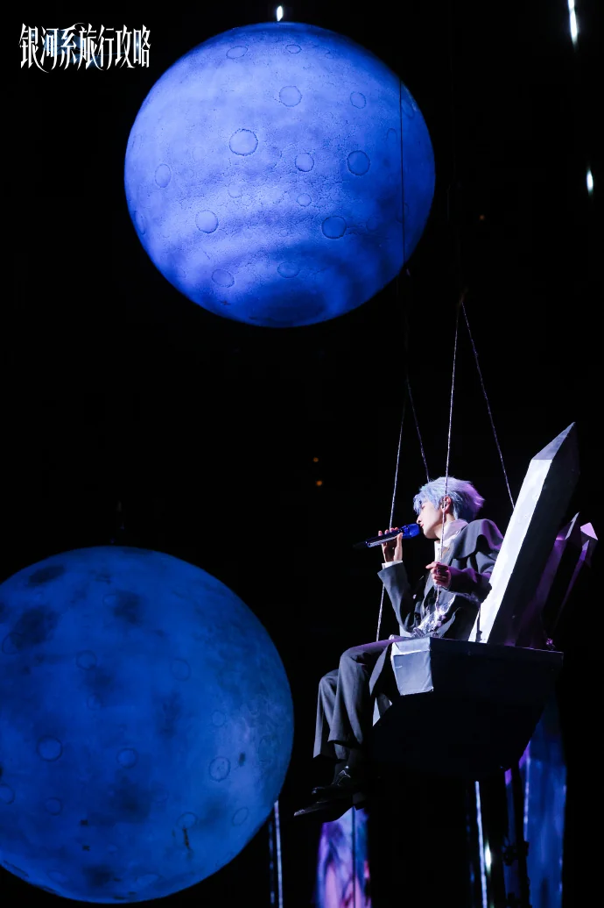
赛博恩给在外执行任务的烬行发语音消息，连发十二条，每条三百六十秒。烬行回复一个字："忙。" 赛博恩又发十三条。烬行："再发拉黑。" 赛博恩安静了十秒，发了个"哥"。烬行："说。" 赛博恩："注意安全。" 烬行没回。但当天晚上，赛博恩的账户收到一笔转账，备注写："买。"
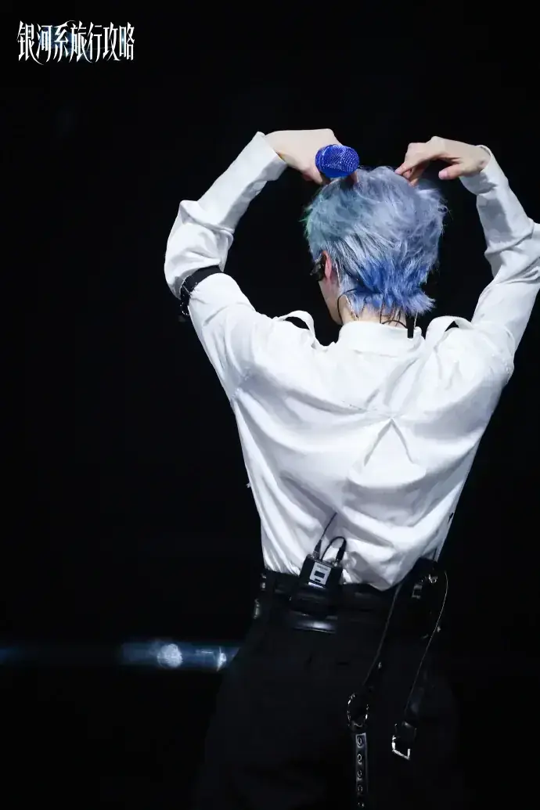
烬行在光脑上新下单的家务机器人终于到酒吧了。机器人转了两圈，停在斯沃德脚边，吸尘口对准他周边掉的一地毛，发出一声满足的电子音："哔——"然后开启了疯狂工作模式。
斯沃德："它是不是在笑？"
烬行："嗯。这是最高级的版本，自带情绪模块。"
斯沃德："那它很喜欢我？"
烬行："喜欢你的毛。"
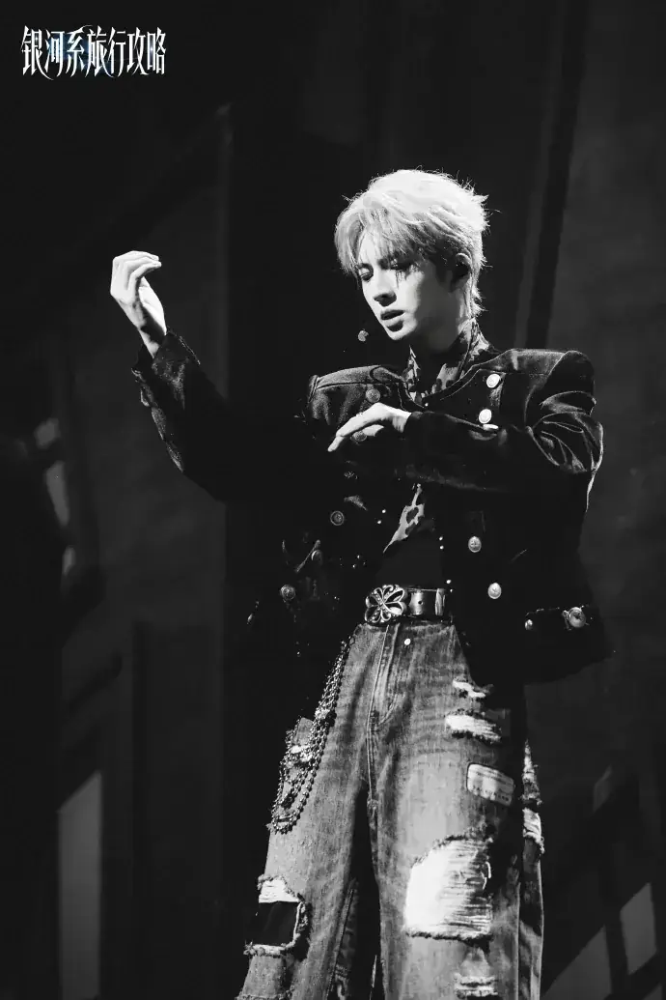
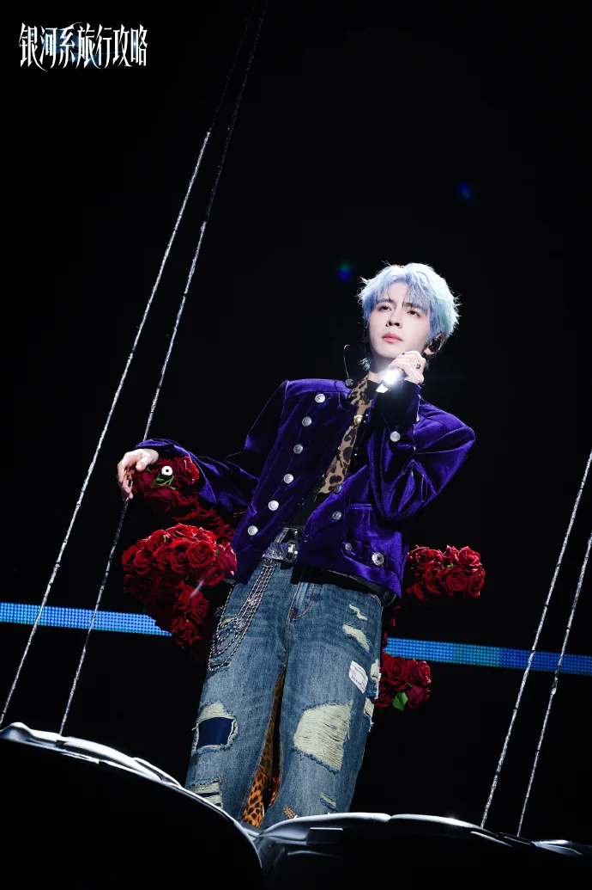
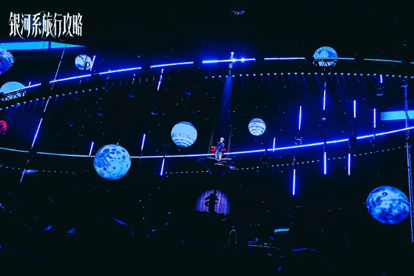
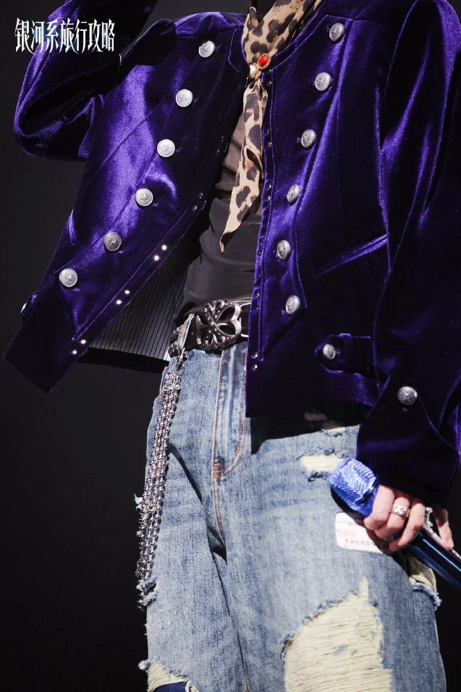
斯沃德："阿毛，你觉得队长最厉害的是什么？"
谶："擦杯子很快。"
斯沃德："……不是战斗吗？"
谶："战斗的时候他只射一箭。擦杯子要擦一晚上。所以擦杯子更厉害。"
斯沃德："你说得好像有道理。"
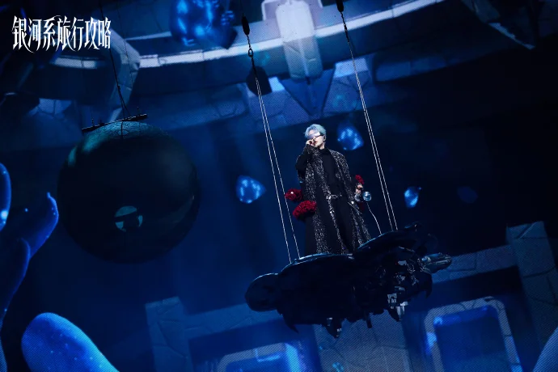
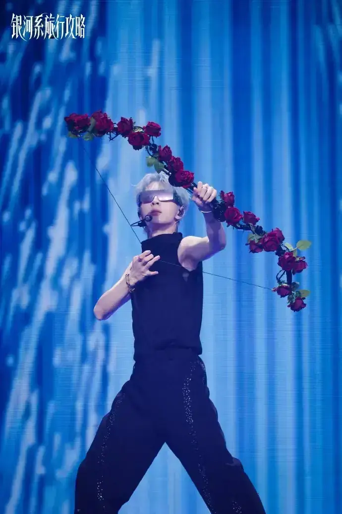
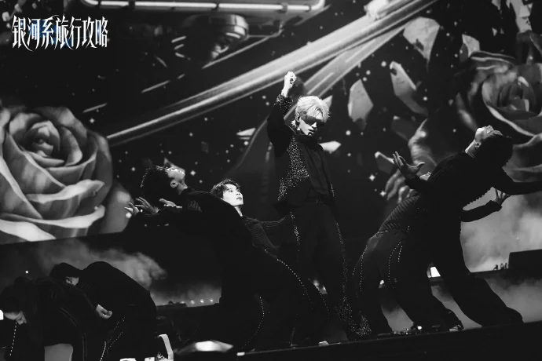
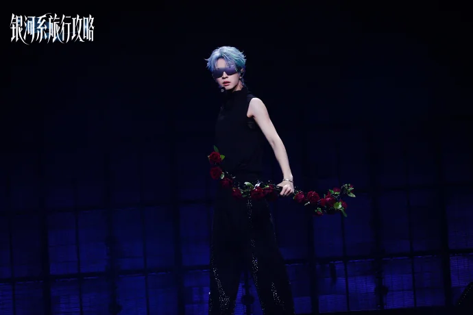
斯沃德："队长，你教我射箭呗！"
烬行："你是剑客。"
斯沃德："我想学新技能！"
烬行递给他一把弓。斯沃德拉满，弓飞向了远方。
烬行："天赋异禀。"
斯沃德："……这是夸奖吗？"
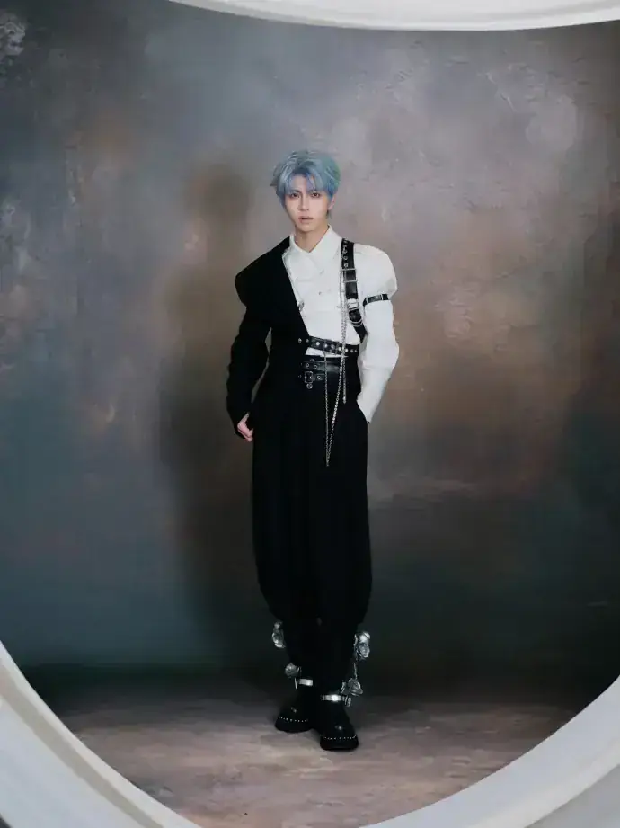
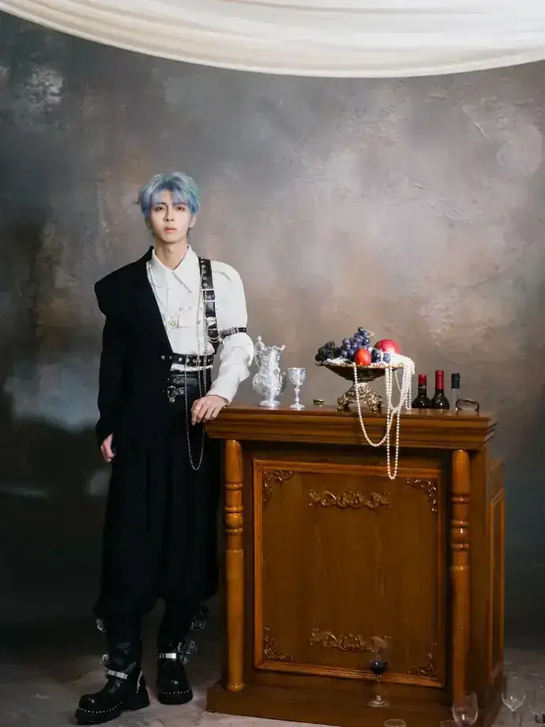
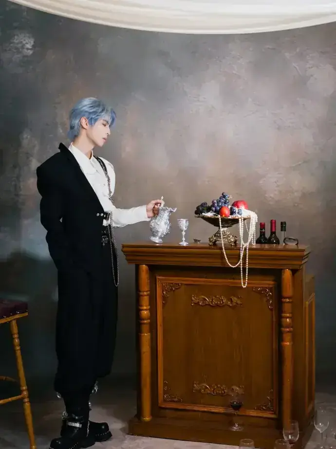
烬行把一张账单放在赛博恩面前。
赛博恩："这是什么?"
烬行："房租。"
赛博恩："我住你酒吧仓库还要交房租？"
烬行："水电费。"
赛博恩："我自己发的电!"
烬行："那交水费。"
赛博恩："我可以不喝水。"
烬行："那你不洗澡？"
赛博恩："......洗。"
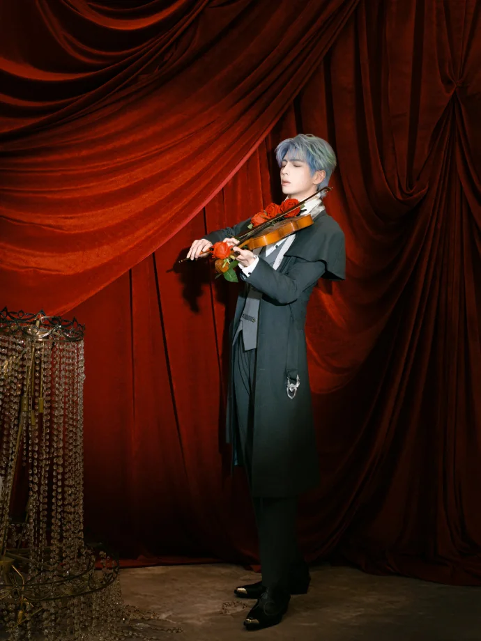
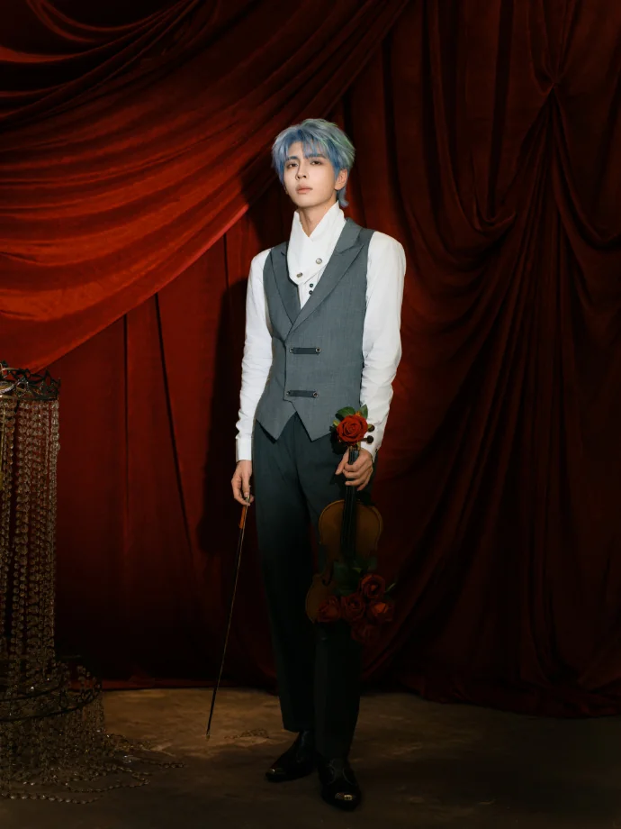
赛博恩小的时候很怕冷，家里暖气开得再足还是手脚冰凉。烬行用厚厚的被子把赛博恩裹起来，两只手灵活地捏着被角在矮他半头的小孩儿胸前打了个结。
"这是大侠的披风，披着就不冷啦。"
客厅的大人们只看到一只站着的毛毛虫从房间里慢慢挪出来……妈妈走过来三两下把被子解开，拎着胳肢窝把"雪人"抱出来。烬行重新把被角缠绕，往两边一拉，坚固的活结又绑好了。两只被角紧密地缠绕在一起，"就像他和哥哥，永远不会分开"。
——后来赛博恩流浪星际，到一个气候极端恶劣的星球，温控系统紊乱，如坠冰窖。沉浮的梦里，有人把毯子裹在他肩上，打了个别致的活结，指尖温热，"像好多年前的冬天牵着他的掌心"。星际战争爆发，旧世纪分崩离析后的第 42 年，赛博恩终于又梦到烬行。
猎人穿过潮湿的蕨丛，
身影留在每一片叶子上。
梅雨季来临，
铃兰摇响多年后的背囊。
那支他寻觅已久的绿意，
原来是他放走的。
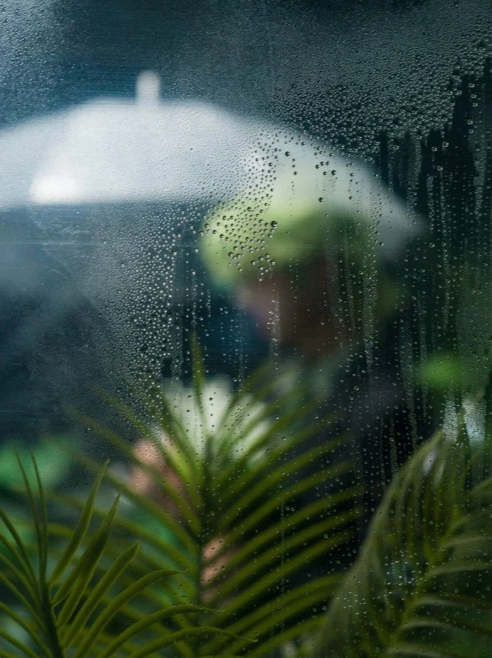
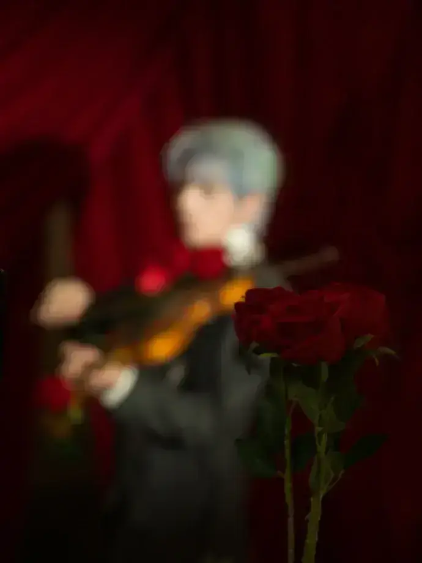